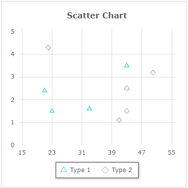
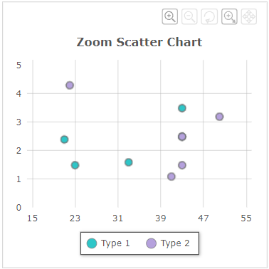
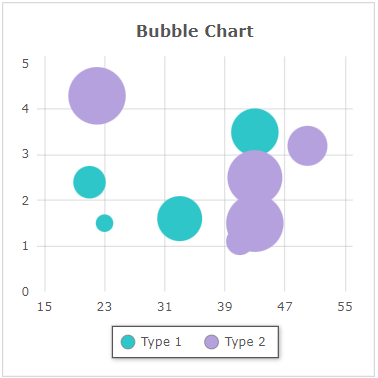

Fusionchart의 'Scatter', 'Bubble' 타입을 확인할 수 있는 예제입니다. 차트의 타입은 'changeType' 메소드를 사용하여 설정할 수 있습니다.
이 예제의 Fusion Chart 버전은 3.19입니다.
FusionChart 가이드 : https://www.fusioncharts.com/dev/fusioncharts
FusionChart의 타입 목록 : https://www.fusioncharts.com/dev/chart-guide/list-of-charts/
스크립트로 'Scatter Charts' 타입의 차트 변경하기
스크립트로 'Bubble Charts' 타입의 차트 변경하기
'Scatter Charts' 영역의 Radio에 변경할 수 있는 차트 타입이 구성되어 있습니다. 항목을 선택(클릭)하면 차트 타입이 변경됩니다.
1
CASE 1. 'Scatter Chart' 타입
Image 1.브라우저(Chrome) 실행 예시 - 'Scatter Chart' 타입

2
CASE 2. 'Zoom Scatter Chart' 타입
Image 2.브라우저(Chrome) 실행 예시 - 'Zoom Scatter Chart' 타입

'Bubble Charts' 영역의 Radio에 변경할 수 있는 차트 타입이 구성되어 있습니다. 항목을 선택(클릭)하면 차트 타입이 변경됩니다.
1
CASE 1. 'Bubble Chart' 타입
Image 3.브라우저(Chrome) 실행 예시 - 'Bubble Chart' 타입

FusionChart의 'changeType' 메소드를 사용하여 스크립트를 작성합니다.
Example 1.Script
// 'Scatter Charts' 타입 변경 예시) // Fucionchart의 속성 'seriesColumns' 예시) [['X','Y']] // Fusionchart 'cht_exam1'의 차트 타입을 'Scatter Chart'로 변경합니다. cht_exam1.changeType('scatter'); // Fusionchart 'cht_exam1'의 차트 타입을 'Zoom Scatter Chart'로 변경합니다. cht_exam1.changeType('zoomscatter');
Example 2.Source
<w2:fusionchart chartType="Scatter" id="cht_exam1" labelNode="Type" seriesColumns="[['X','Y']]" drawType="javascript" ref="data:dlt_chartData_1"> </w2:fusionchart>
Example 3.DataList 'dlt_chartData_1'의 JSON 유형의 데이터
[
{
"Type": "Type 1",
"X": "21",
"Y": "2.4"
},
{
"Type": "Type 1",
"X": "43",
"Y": "2.5"
},
{
"Type": "Type 2",
"X": "41",
"Y": "1.1"
},
{
"Type": "Type 2",
"X": "43",
"Y": "2.5"
}
]FusionChart의 'changeType' 메소드를 사용하여 스크립트를 작성합니다.
Example 4.Script
// 'Bubble Charts' 타입 변경 예시) // Fucionchart의 속성 'seriesColumns' 예시) [['X','Y','Z']] // Fusionchart 'cht_exam2'의 차트 타입을 'Bubble Chart'로 변경합니다. cht_exam2.changeType('bubble');
Example 5.Source
<w2:fusionchart chartType="Scatter" id="cht_exam2" labelNode="Type" seriesColumns="[['X','Y','Z']]" drawType="javascript" ref="data:dlt_chartData_1"> </w2:fusionchart>
Example 6.DataList 'dlt_chartData_1'의 JSON 유형의 데이터
[
{
"Type": "Type 1",
"X": "21",
"Y": "2.4",
"Z": "4.4"
},
{
"Type": "Type 1",
"X": "43",
"Y": "2.5",
"Z": "7.4"
},
{
"Type": "Type 2",
"X": "41",
"Y": "1.1",
"Z": "3.4"
},
{
"Type": "Type 2",
"X": "43",
"Y": "2.5",
"Z": "12.4"
}
]chartType ( chartType )
setChartAttribute( options )
draw( )